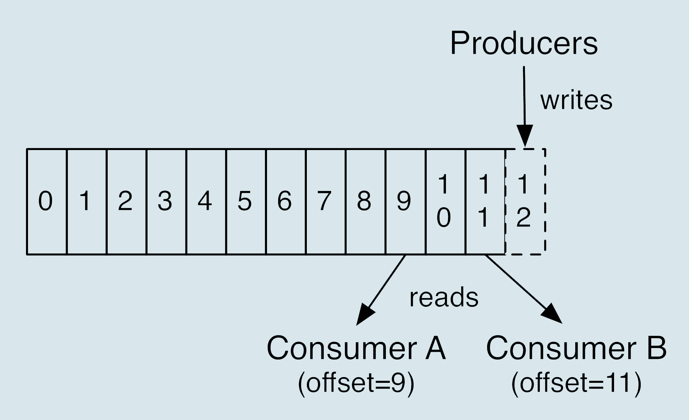
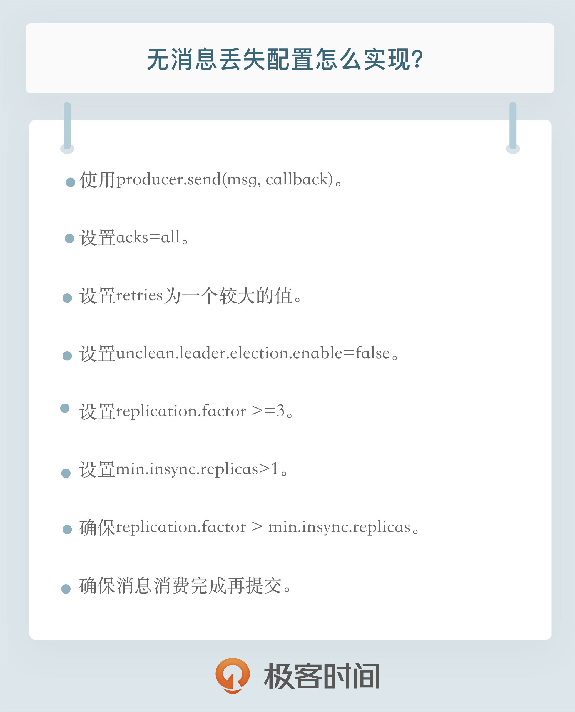

- 00 开篇词 为什么要学习Kafka？.md.html
- 01 消息引擎系统ABC.md.html
- 02 一篇文章带你快速搞定Kafka术语.md.html
- 03 Kafka只是消息引擎系统吗？.md.html
- 04 我应该选择哪种Kafka？.md.html
- 05 聊聊Kafka的版本号.md.html
- 06 Kafka线上集群部署方案怎么做？.md.html
- 07 最最最重要的集群参数配置（上）.md.html
- 08 最最最重要的集群参数配置（下）.md.html
- 09 生产者消息分区机制原理剖析.md.html
- 10 生产者压缩算法面面观.md.html
- 11 无消息丢失配置怎么实现？.md.html
- 12 客户端都有哪些不常见但是很高级的功能？.md.html
- 13 Java生产者是如何管理TCP连接的？.md.html
- 14 幂等生产者和事务生产者是一回事吗？.md.html
- 15 消费者组到底是什么？.md.html
- 16 揭开神秘的“位移主题”面纱.md.html
- 17 消费者组重平衡能避免吗？.md.html
- 18 Kafka中位移提交那些事儿.md.html
- 19 CommitFailedException异常怎么处理？.md.html
- 20 多线程开发消费者实例.md.html
- 21 Java 消费者是如何管理TCP连接的_.md.html
- 22 消费者组消费进度监控都怎么实现？.md.html
- 23 Kafka副本机制详解.md.html
- 24 请求是怎么被处理的？.md.html
- 25 消费者组重平衡全流程解析.md.html
- 26 你一定不能错过的Kafka控制器.md.html
- 27 关于高水位和Leader Epoch的讨论.md.html
- 28 主题管理知多少_.md.html
- 29 Kafka动态配置了解下？.md.html
- 30 怎么重设消费者组位移？.md.html
- 31 常见工具脚本大汇总.md.html
- 32 KafkaAdminClient：Kafka的运维利器.md.html
- 33 Kafka认证机制用哪家？.md.html
- 34 云环境下的授权该怎么做？.md.html
- 35 跨集群备份解决方案MirrorMaker.md.html
- 36 你应该怎么监控Kafka？.md.html
- 37 主流的Kafka监控框架.md.html
- 38 调优Kafka，你做到了吗？.md.html
- 39 从0搭建基于Kafka的企业级实时日志流处理平台.md.html
- 40 Kafka Streams与其他流处理平台的差异在哪里？.md.html
- 41 Kafka Streams DSL开发实例.md.html
- 42 Kafka Streams在金融领域的应用.md.html
- 加餐 搭建开发环境、阅读源码方法、经典学习资料大揭秘.md.html
- 用户故事 黄云：行百里者半九十.md.html
- 结束语 以梦为马，莫负韶华！.md.html
- 捐赠
11 无消息丢失配置怎么实现？
你好，我是胡夕。今天我要和你分享的主题是：如何配置Kafka无消息丢失。
一直以来，很多人对于Kafka丢失消息这件事情都有着自己的理解，因而也就有着自己的解决之道。在讨论具体的应对方法之前，我觉得我们首先要明确，在Kafka的世界里什么才算是消息丢失，或者说Kafka在什么情况下能保证消息不丢失。这点非常关键，因为很多时候我们容易混淆责任的边界，如果搞不清楚事情由谁负责，自然也就不知道由谁来出解决方案了。
那Kafka到底在什么情况下才能保证消息不丢失呢？
一句话概括，Kafka只对“已提交”的消息（committed message）做有限度的持久化保证。
这句话里面有两个核心要素，我们一一来看。
第一个核心要素是“已提交的消息”。什么是已提交的消息？当Kafka的若干个Broker成功地接收到一条消息并写入到日志文件后，它们会告诉生产者程序这条消息已成功提交。此时，这条消息在Kafka看来就正式变为“已提交”消息了。
那为什么是若干个Broker呢？这取决于你对“已提交”的定义。你可以选择只要有一个Broker成功保存该消息就算是已提交，也可以是令所有Broker都成功保存该消息才算是已提交。不论哪种情况，Kafka只对已提交的消息做持久化保证这件事情是不变的。
第二个核心要素就是“有限度的持久化保证”，也就是说Kafka不可能保证在任何情况下都做到不丢失消息。举个极端点的例子，如果地球都不存在了，Kafka还能保存任何消息吗？显然不能！倘若这种情况下你依然还想要Kafka不丢消息，那么只能在别的星球部署Kafka Broker服务器了。
现在你应该能够稍微体会出这里的“有限度”的含义了吧，其实就是说Kafka不丢消息是有前提条件的。假如你的消息保存在N个Kafka Broker上，那么这个前提条件就是这N个Broker中至少有1个存活。只要这个条件成立，Kafka就能保证你的这条消息永远不会丢失。
总结一下，Kafka是能做到不丢失消息的，只不过这些消息必须是已提交的消息，而且还要满足一定的条件。当然，说明这件事并不是要为Kafka推卸责任，而是为了在出现该类问题时我们能够明确责任边界。
“消息丢失”案例
好了，理解了Kafka是怎样做到不丢失消息的，那接下来我带你复盘一下那些常见的“Kafka消息丢失”案例。注意，这里可是带引号的消息丢失哦，其实有些时候我们只是冤枉了Kafka而已。
案例1：生产者程序丢失数据
Producer程序丢失消息，这应该算是被抱怨最多的数据丢失场景了。我来描述一个场景：你写了一个Producer应用向Kafka发送消息，最后发现Kafka没有保存，于是大骂：“Kafka真烂，消息发送居然都能丢失，而且还不告诉我？！”如果你有过这样的经历，那么请先消消气，我们来分析下可能的原因。
目前Kafka Producer是异步发送消息的，也就是说如果你调用的是producer.send(msg)这个API，那么它通常会立即返回，但此时你不能认为消息发送已成功完成。
这种发送方式有个有趣的名字，叫“fire and forget”，翻译一下就是“发射后不管”。这个术语原本属于导弹制导领域，后来被借鉴到计算机领域中，它的意思是，执行完一个操作后不去管它的结果是否成功。调用producer.send(msg)就属于典型的“fire and forget”，因此如果出现消息丢失，我们是无法知晓的。这个发送方式挺不靠谱吧，不过有些公司真的就是在使用这个API发送消息。
如果用这个方式，可能会有哪些因素导致消息没有发送成功呢？其实原因有很多，例如网络抖动，导致消息压根就没有发送到Broker端；或者消息本身不合格导致Broker拒绝接收（比如消息太大了，超过了Broker的承受能力）等。这么来看，让Kafka“背锅”就有点冤枉它了。就像前面说过的，Kafka不认为消息是已提交的，因此也就没有Kafka丢失消息这一说了。
不过，就算不是Kafka的“锅”，我们也要解决这个问题吧。实际上，解决此问题的方法非常简单：Producer永远要使用带有回调通知的发送API，也就是说不要使用producer.send(msg)，而要使用producer.send(msg, callback)。不要小瞧这里的callback（回调），它能准确地告诉你消息是否真的提交成功了。一旦出现消息提交失败的情况，你就可以有针对性地进行处理。
举例来说，如果是因为那些瞬时错误，那么仅仅让Producer重试就可以了；如果是消息不合格造成的，那么可以调整消息格式后再次发送。总之，处理发送失败的责任在Producer端而非Broker端。
你可能会问，发送失败真的没可能是由Broker端的问题造成的吗？当然可能！如果你所有的Broker都宕机了，那么无论Producer端怎么重试都会失败的，此时你要做的是赶快处理Broker端的问题。但之前说的核心论据在这里依然是成立的：Kafka依然不认为这条消息属于已提交消息，故对它不做任何持久化保证。
案例2：消费者程序丢失数据
Consumer端丢失数据主要体现在Consumer端要消费的消息不见了。Consumer程序有个“位移”的概念，表示的是这个Consumer当前消费到的Topic分区的位置。下面这张图来自于官网，它清晰地展示了Consumer端的位移数据。

比如对于Consumer A而言，它当前的位移值就是9；Consumer B的位移值是11。
这里的“位移”类似于我们看书时使用的书签，它会标记我们当前阅读了多少页，下次翻书的时候我们能直接跳到书签页继续阅读。
正确使用书签有两个步骤：第一步是读书，第二步是更新书签页。如果这两步的顺序颠倒了，就可能出现这样的场景：当前的书签页是第90页，我先将书签放到第100页上，之后开始读书。当阅读到第95页时，我临时有事中止了阅读。那么问题来了，当我下次直接跳到书签页阅读时，我就丢失了第96～99页的内容，即这些消息就丢失了。
同理，Kafka中Consumer端的消息丢失就是这么一回事。要对抗这种消息丢失，办法很简单：维持先消费消息（阅读），再更新位移（书签）的顺序即可。这样就能最大限度地保证消息不丢失。
当然，这种处理方式可能带来的问题是消息的重复处理，类似于同一页书被读了很多遍，但这不属于消息丢失的情形。在专栏后面的内容中，我会跟你分享如何应对重复消费的问题。
除了上面所说的场景，其实还存在一种比较隐蔽的消息丢失场景。
我们依然以看书为例。假设你花钱从网上租借了一本共有10章内容的电子书，该电子书的有效阅读时间是1天，过期后该电子书就无法打开，但如果在1天之内你完成阅读就退还租金。
为了加快阅读速度，你把书中的10个章节分别委托给你的10个朋友，请他们帮你阅读，并拜托他们告诉你主旨大意。当电子书临近过期时，这10个人告诉你说他们读完了自己所负责的那个章节的内容，于是你放心地把该书还了回去。不料，在这10个人向你描述主旨大意时，你突然发现有一个人对你撒了谎，他并没有看完他负责的那个章节。那么很显然，你无法知道那一章的内容了。
对于Kafka而言，这就好比Consumer程序从Kafka获取到消息后开启了多个线程异步处理消息，而Consumer程序自动地向前更新位移。假如其中某个线程运行失败了，它负责的消息没有被成功处理，但位移已经被更新了，因此这条消息对于Consumer而言实际上是丢失了。
这里的关键在于Consumer自动提交位移，与你没有确认书籍内容被全部读完就将书归还类似，你没有真正地确认消息是否真的被消费就“盲目”地更新了位移。
这个问题的解决方案也很简单：如果是多线程异步处理消费消息，Consumer程序不要开启自动提交位移，而是要应用程序手动提交位移。在这里我要提醒你一下，单个Consumer程序使用多线程来消费消息说起来容易，写成代码却异常困难，因为你很难正确地处理位移的更新，也就是说避免无消费消息丢失很简单，但极易出现消息被消费了多次的情况。
最佳实践
看完这两个案例之后，我来分享一下Kafka无消息丢失的配置，每一个其实都能对应上面提到的问题。
不要使用producer.send(msg)，而要使用producer.send(msg, callback)。记住，一定要使用带有回调通知的send方法。
设置acks = all。acks是Producer的一个参数，代表了你对“已提交”消息的定义。如果设置成all，则表明所有副本Broker都要接收到消息，该消息才算是“已提交”。这是最高等级的“已提交”定义。
设置retries为一个较大的值。这里的retries同样是Producer的参数，对应前面提到的Producer自动重试。当出现网络的瞬时抖动时，消息发送可能会失败，此时配置了retries > 0的Producer能够自动重试消息发送，避免消息丢失。
设置unclean.leader.election.enable = false。这是Broker端的参数，它控制的是哪些Broker有资格竞选分区的Leader。如果一个Broker落后原先的Leader太多，那么它一旦成为新的Leader，必然会造成消息的丢失。故一般都要将该参数设置成false，即不允许这种情况的发生。
设置replication.factor >= 3。这也是Broker端的参数。其实这里想表述的是，最好将消息多保存几份，毕竟目前防止消息丢失的主要机制就是冗余。
设置min.insync.replicas > 1。这依然是Broker端参数，控制的是消息至少要被写入到多少个副本才算是“已提交”。设置成大于1可以提升消息持久性。在实际环境中千万不要使用默认值1。
确保replication.factor > min.insync.replicas。如果两者相等，那么只要有一个副本挂机，整个分区就无法正常工作了。我们不仅要改善消息的持久性，防止数据丢失，还要在不降低可用性的基础上完成。推荐设置成replication.factor = min.insync.replicas + 1。
确保消息消费完成再提交。Consumer端有个参数enable.auto.commit，最好把它设置成false，并采用手动提交位移的方式。就像前面说的，这对于单Consumer多线程处理的场景而言是至关重要的。
小结
今天，我们讨论了Kafka无消息丢失的方方面面。我们先从什么是消息丢失开始说起，明确了Kafka持久化保证的责任边界，随后以这个规则为标尺衡量了一些常见的数据丢失场景，最后通过分析这些场景，我给出了Kafka无消息丢失的“最佳实践”。总结起来，我希望你今天能有两个收获：
- 明确Kafka持久化保证的含义和限定条件。
- 熟练配置Kafka无消息丢失参数。

开放讨论
其实，Kafka还有一种特别隐秘的消息丢失场景：增加主题分区。当增加主题分区后，在某段“不凑巧”的时间间隔后，Producer先于Consumer感知到新增加的分区，而Consumer设置的是“从最新位移处”开始读取消息，因此在Consumer感知到新分区前，Producer发送的这些消息就全部“丢失”了，或者说Consumer无法读取到这些消息。严格来说这是Kafka设计上的一个小缺陷，你有什么解决的办法吗？
欢迎写下你的思考和答案，我们一起讨论。如果你觉得有所收获，也欢迎把文章分享给你的朋友。
© 2019 - 2023 Liangliang Lee. Powered by gin and hexo-theme-book.